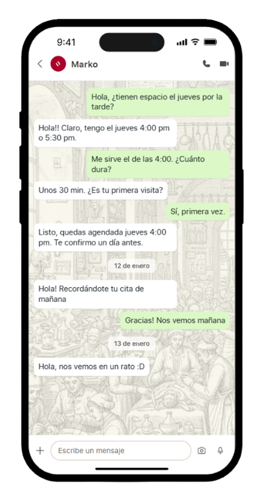

DYM Systems
Mientras insygt reconoce tráfico y ajusta el contenido en pantalla, MARKO responde por chat "¿dónde está el café?" o "¿tienen esto en oferta?" — y cierra la venta sin que nadie del staff intervenga.
El sistema
Insygt detecta quién está frente a tu punto de venta y qué le interesa, sin almacenar datos personales.
Esa información alimenta a MARKO, que conversa con el cliente y resuelve sus dudas al instante.
Todo sucede en el mismo momento — y tú recibes los resultados en un solo dashboard.
DYM Systems reemplaza el trabajo repetitivo de atención al cliente con un sistema que observa, conversa y aprende — disponible siempre, en cada sucursal.
Audiencia y tráfico analizados al instante.
Responde y vende como tu mejor vendedor.
Inventario, ofertas y ubicación siempre al día.
Audiencia y ventas en un solo panel.
insygt
Pantallas inteligentes con IA que detectan tráfico, analizan audiencia y adaptan el contenido automáticamente — sin almacenar datos personales.

Un chatbot con IA que conoce tu catálogo, tus ofertas y tus pasillos de memoria, y ayuda a cada cliente a encontrar lo que busca — y a cerrar la compra.
Integración
insygt y MARKO se implementan juntos y trabajan como un solo sistema desde el primer día.
Verticales
Supermercados, restaurantes, farmacias, retail, conveniencia y centros comerciales — el mismo motor, entrenado con tu catálogo.
Modalidades
Puedes empezar con una sola tecnología o con el sistema completo — DYM crece contigo.
Para negocios que quieren empezar por observar y entender a su audiencia.
Para negocios que quieren el ecosistema completo desde el día uno.
Para negocios que quieren empezar por convertir con IA conversacional.
Preguntas frecuentes
Conoce cómo funciona DYM Systems, qué incluye cada tecnología y qué esperar al implementarlo en tu negocio.
Sí. Cada tecnología funciona de forma independiente o integrada — tú eliges cómo empezar.
Sí, el sistema está diseñado para escalar a múltiples puntos de venta desde un solo dashboard.
Quiénes somos
DYM Systems nace para crear el primer sistema integral de inteligencia comercial y ventas asistidas para espacios físicos en México.
DYM Systems nace para crear el primer sistema integral de inteligencia comercial y ventas asistidas para espacios físicos en México.
Contacto
Cuéntanos sobre tu operación y te mostramos cómo DYM Systems se adapta a tu tienda.
DYM Systems · contacto@dymsystems.com · 660 211 4254 · Chihuahua, México